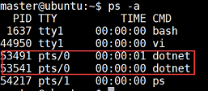
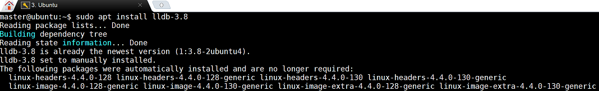
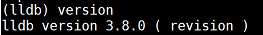

I have been using Windbg and its extensions like SOS, psscor, mex for several years. They are really professional tools for .Net deep debugging. With the newly released cross platform .NET Core. Windbg and its extensions still works if the .Net Core Application runs on top of Windows. However, they are not longer work for .Net Core Debugging if it out of Windows. Fortunately, the .NET Core team has been porting the SOS functionality to Linux in the form of an extension to the LLDB debugger on Linux and this makes it possible for us to do the same in-depth debugging on .NET Core.
The major difference between LLDB and WinDBG is, LLDB is a command line debugger where as WinDBG is a GUI based. And Source Level debugging in LLDB is not fully evolved and this is one of the drawback for WinDBG users. Microsoft opted with LLDB Debugger for many reasons. LLDB is easy to customize as compared to GDB. LLDB debugger exposes the APIs to write plugins (extensions in WinDBG world) especially for managed code and it is easily configurable. Our famous managed debugging extension sos.dll is almost there (85%) for LLDB.
Install .Net Core
To start building .NET apps you just need to download and install the .NET SDK (Software Development Kit). Here is quite straight forward steps to install .Net Core on Linux.
Register Microsoft key and feed
Before installing .NET, you’ll need to register the Microsoft key, register the product repository, and install required dependencies. This only needs to be done once per machine.Open a command prompt and run the following commands:
1
2wget -q https://packages.microsoft.com/config/ubuntu/16.04/packages-microsoft-prod.deb
sudo dpkg -i packages-microsoft-prod.debInstall .NET SDK
Update the products available for installation, then install the .NET SDK.
In your command prompt, run the following commands:1
2
3sudo apt-get install apt-transport-https
sudo apt-get update
sudo apt-get install dotnet-sdk-2.1Execute the below to create an empty project and run it. The application can be accessed successfully via localhost:5000.
1
2
3
4
5mkdir coredemo
cd coredemo
dotnet new web
dotnet restore
dotnet runNow you can access the web site from broswer from port 5000 (HTTP) or 5001 (HTPPS). You can also check process by run command
ps -A.
Setup & Launch LLDB
Microsoft opted with LLDB Debugger, because
- LLDB is easy to customize as compared to GDB
- LLDB debugger exposes the APIs to write plugins (extensions in WinDBG world) especially for managed code and it is easily configurable.
- whereas with GDB, such provisions are limited and hence the LLDB route.
Our famous managed debugging extension sos.dll is almost there (85%) for LLDB.Some of SOS extension commands rely on Windows functionality which are not present on Linux. This is where our time is being spent and we will definitely reach to that stage by RTM time frame.
The current stable version of LLDB is 3.6. However, this version is not compatible to support managed debugging.
Microsoft forked 3.7 version, contributed the changes to fit managed debugging model. The fixed and supported version is 3.8.
Run apt search lldb. This will display a list of available versions.
Run sudo apt install lldb-X.Y, where X.Y is the version you are installing (usually the latest). As this post is for .NET Core Debugging, you can instal lldb-3.8.

Now, the debugger is ready and time to have some fun. To open lldb, you can run command lldb. This takes you to lldb command window and it waits for your next action. To check check lldb version, you can run command version.

DISASSEMBLY
As you know, LINUX defualt disassembly is GAS, it refer as AT&T syntax. Its instruction is quite different from Intel Assemebly. GAS instruction read from left to right. The LLDB debugger privods a way to change GAS to a regualr intel type disassembly. Which it may us deubgging more easier. Use below in LLDB to change the default GNU disassembly settings :
settings set target.x86-disassembly-flavor intel
Of cause, you can revert it back by run following command in LLDB :
settings set target.x86-disassembly-flavor att
To make the change permanent, i.e. to have this setting all the time whenever LLDB is launched, add the above command in lldb.init file and place this file where lldb bits exist on the machine.
SYMBOLS
When we debugging in Windows, there is a centralized symbol server for .Net Debugging. However, there is not such centralized symbol server for Microsoft Binary for Linux/Mac. To workaround this issue, we have to load symbols manually. To doing so, the 1st thing is to determin CLR’s version. This is different from .Net Core version you installed. In the server, you can installed mutiple .Net Core versions, in the runtime, it may just have a specific one.
- Open the file Microsoft.NETCore.App.deps.json which is under the Framework installation folder.
- Check the value next to “Microsoft.NETCore.Runtime.CoreCLR“ and that is the CoreCLR version the .NET Framework is running on. For eg. If you are on RC2, this is the version (highlighted) “Microsoft.NETCore.Runtime.CoreCLR”: “1.0.2-rc2-
24027“
If debugging in a machine locally, while install .Net Core SDK, it contains the symbol files. If debugging from other machine, you need to either install excatly same version of .Net Core SDK, or you need to copy symbol from source machine. - Once the matching symbols are identified, copy the .DBG files into the Framework installation folder $DOTNET_HOME/shared/Microsft.NetCore.App/1.0.0-XX.######
- In Linux, the debugger will automatically load the symbols if they exist in the Framework folder.
Source Code Sync
.NET Core CLR and .NET CoreFX source is available at GitHub. Source at GitHub is synced on daily basis and is being maintained through different branches. The Master branch do in sync with major releases such as RC, RTM, Updates.
Download Source
Follow the Steps to download the source on your Linux machine
- Open a terminal window.
Create a folder ‘git’ under your $HOME directory and change into that folder
1
2
3
4mkdir git
cd git
Clone the CoreCLR source
git clone https://github.com/dotnet/coreclr.gitIf for some reason, the above command fails with communication error, then retry the command again until it succeeds.
Clone CoreFX source
1
git clone https://github.com/dotnet/corefx.git
Once the source is successfully cloned, the source structure look like below
$HOME/git/coreclr/src
$HOME/git/corefx/src
Setting Source path
On Linux, the debugger automatically loads the symbols when symbol are present in the Framework folder automatically. Once the symbol loaded correctly, sourcecode linke appears on the call stack. The next is to setup source code path, it’s similar like what we do in the Windows.
To set the source in LLDB debugger, run the command.
1 | settings set target.source-map <orig-source-path> <$HOME/git/coreclr/source> |
That’s what the “target.source-map” setting is for:
(lldb) settings list target.source-map
source-map -- Source path remappings used to track the change of location between a source file when built, and where it exists on the current system.
It consists of an array of duples, the first element of each duple is some part (starting at the root) of the path to the file when it
was built, and the second is where the remainder of the original build hierarchy is rooted on the local system. Each element of the
array is checked in order and the first one that results in a match wins
Orig-source-Path is the source information from which the binary is built. Such as in Windows, when you debug managed app, the call stack shows something like f:\ndp.…. For the runtime and other Framework binaries, This is called the original source path.
SUMMARY
Until now, you are good to enough the debugging in Linux. The step is strage forward and very similar like we do in Windows.
- Install .Net Core
- Setup LLDB
- Setup Symbol
- Setup Source and Source ppath
Sonic Guo